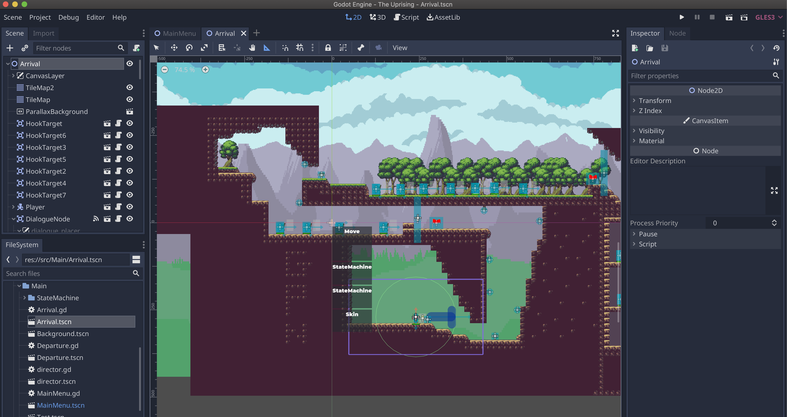
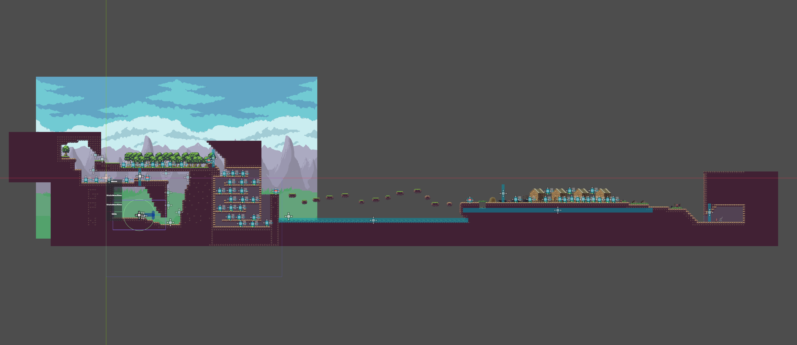
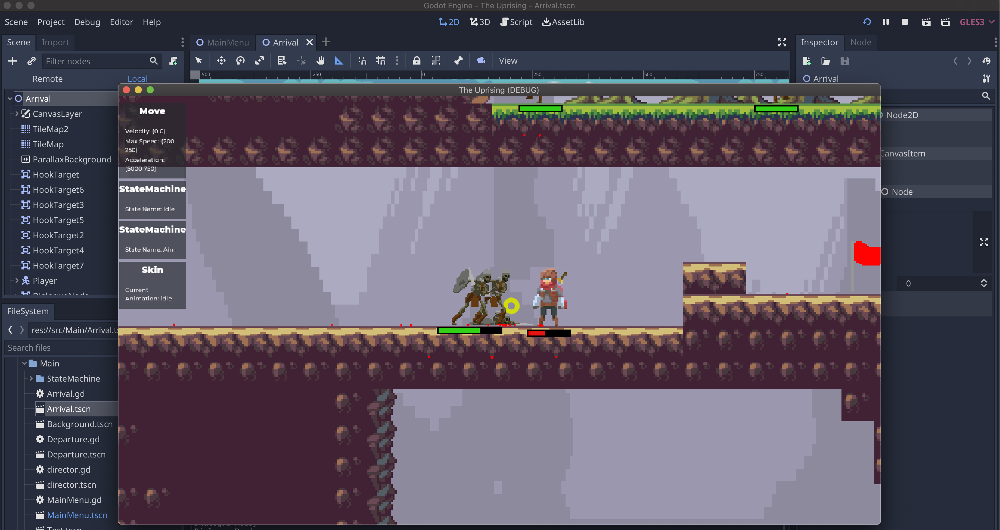
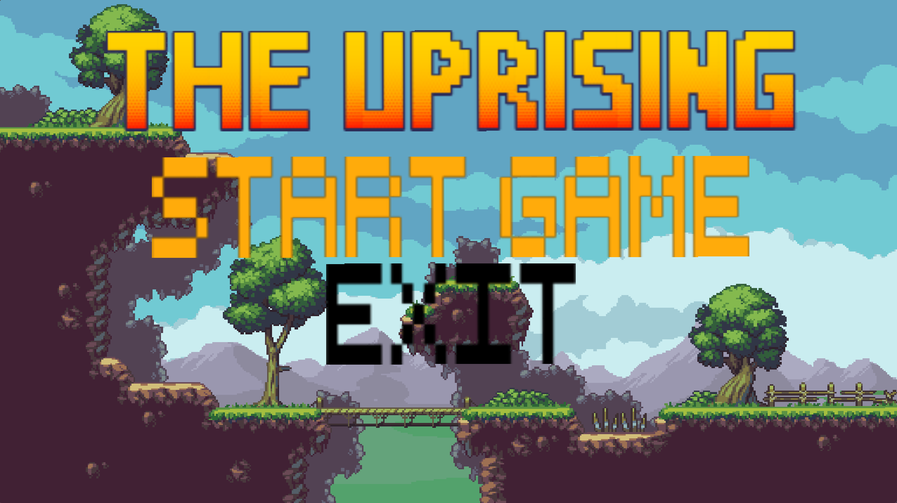

Game Designer Diary
Before creating the game design document, my partner Adwin and I started brainstorming on the storyline of the game. Our storyline fulfills the criteria for assignment 1 and we have added far more interesting elements into it. Adwin and i are open to each other's ideas and we both choose what is best from these ideas we brainstormed.
While we are brainstorming ideas on how the storyline would be like, Adwin and I also came up with ideas on what and how the main character, antagonists(monsters) and setting would be like. Weve come up with 7 tiers of monsters and 7 ranks of humans that are present in the academy we came up with, which serves as a safe haven for humans in a dangerous world full of monsters.
Apart from that, we have also come up with the type of weapons that the main character will be using. To make it interesting we came up with an idea to allow the main character to combine 2 of their weapon of choice. Each different combination will allow them to do different kind of things. Therefore, making it unique. We implement this because some weapons can help overcome monsters and some other weapons can help players overcome challenging puzzles as well since we plan to include some puzzles in the game to achieve a more interesting gameplay
Our plan is to develop this game as a 2 dimensional game since 2D games are regaining their popularity and choosing PC as the platform for the game since the controls would possibly be complicated since this game requires pure skill
Before we started developing our game prototype for our assignment 2, we did some extensive research on 3 different types of game designing platforms, those are: Unity, GameMaker and Godot. At first, we planned to use Unity because it seems like a better option compared to GameMaker. However, after we started to play around with the Unity platform, it seems that it is not optimized for the development of 2D games because Unity is usually used for the development of Complex 3D games. From that point onwards, we decided to do a research on another platform called Godot.
After doing an extensive amount of research on Godot, we found that Godot is very good and powerful for the development of 2D games compared to Unity. Godot is free and open source, while GameMaker and Unity requires a bit of payment if we want to use it to the full capacity. It is also very friendly toward beginners, and another reason we chose Godot is because my partner and I have a strong background in Python, which will make it easier for us to do programming in Godot since the language they use has is very similar to python, called GDScript. Therefore, after conducting a heavy research which took us almost an entire day, Adwin and I decided to use Godot for our Assignment 2 Prototype development.

We then proceeded to learn Godot from numerous online videos, courses and documentation. Our way of learning the game development with godot is through learning by doing. So basically, we adopted the learn by doing method.
Some brainstorming were done before actually starting on the prototype development. The both of us then decided that the content of the game prototype should come from a small scene of the actual full game, this is to allow users to get the big picture of the game’s story, mechanics and difficulty. The scene chosen for the prototype is when Alwin was sent on a mission to go fight the monsters but ended up getting caught and given a realization and understanding of what he is actually doing. The scene chosen comprises of most of the obstacles that will be implemented in the real game, like monsters, puzzles, traps, and many more.
After discussing on how the prototype should be like, we split our tasks in order to approach this game development in a fast and efficient way so that we can still keep up with out other assignments and have this game prototype submitted before it’s deadline.
It is decided that my partner Adwin will be in charge for the back-end part of the game, like character movement, game mechanics, interaction with obstacles and monsters, and many more. On the other hand, I will be handling the front end part of the game, which is more on the visuals and acoustics of the games, like the character and monster animation, map design, character design, enemy design, obstacle creation, puzzle creation, background music and sound, and many more interesting visual designs.
The first thing I started doing when approaching this game development is looking for assets online. I found the assets for the map, background, character, mobs and weapons from opengameart.com, which took me almost 5 hours since it was quite difficult to look for the assets that match the theme of the game.
After downloading these assets, I proceeded to animate every character and mob. It took quite a while since it was quite difficult to make the animation working since some of the spritesheet of the character have uneven spaces, making the character look glitchy when it is animated. This made me look for more different kinds of character assets, and after a while of searching I have found a character asset that has even spaces and resolution, making the animation look good and smooth. Each character has an average of 8 frames for each movement, which makes character animation stage quite of a time consuming process. After the character is animated, a 2d collision shape is added to the character. The collision shape was a rectangle at first, which turns out to be unrealistic since it will make the character look like its floating on the edge of the block. Therefore, the collision shape is changed to an oval shape, which makes it look more realistic.
The next step, my partner works on keybinds for the character. For instance, pressing the left click will trigger the attack animation, pressing space will trigger the jump animation and many more. While he works on the character codes, I proceeded to working on the design of the map.
With the assets I found on Opengameart.com, the elements of the tile sets are cropped into blocks, these blocks are then given a square collision shape, so that the character can ‘walk’ on it. The next step is to implement auto tiling, this makes it easier for the designer to create maps since u can add blocks by just holding the mouse button down and drag it instead of clicking on each block one by one.
It took quite some planning to develop this map, because I have to plan on which parts of the map the user can fight mobs, solve puzzles, read tutorials and dialogues, place traps, parkour, and hook to surfaces.
After almost a day of designing the map, it is finally completed. More decorations are added to the map to make it look more realistic, like houses, trees, grass, wheel barrow, haystacks and many more to make the setting look more realistic. There will be 2 scenes, which makes the map design slightly different from one another.
After completing the map designs, I started choosing where the character will spawn and add mobs to several points of the map, this makes me figure out the best location for fighting to happen. It turns out, there are many points of the map which are not smooth for some actions, making me change the designs on some points of the map.
When all these are completed, I started working on the transitions between maps, and added some blood animation to the mobs to make it look better and more realistic, as well as doing more fine tuning which helps to make the gameplay more interesting.
After this segment is completed, I then proceeded to working on the main menu, which only gives 2 options, those are: Start game and exit game. This took quite a while since I could not figure out a way to reduce the typography size.
Lastly, I looked for a background music to be played so that the gameplay would be more interesting, it took me quite some time to figure out how to implement the looping of the sound.
From this point onwards, the front end part of the map is completed, however the back end part is not yet fully completed, so I assisted my partner on some essential back end features to make the game work perfectly and smoothly.
The game is finally done 4 hours before the deadline, we were both ecstatic and did numerous amounts testing to ensure the smoothness of the gameplay. We actually had one person to test out the game, and surprisingly, he gave a good feedback about the game. This makes my partner and I confident that we will score quite well on this assignment. Therefore, we submitted the link to our GPN folder on mel and called it a day.